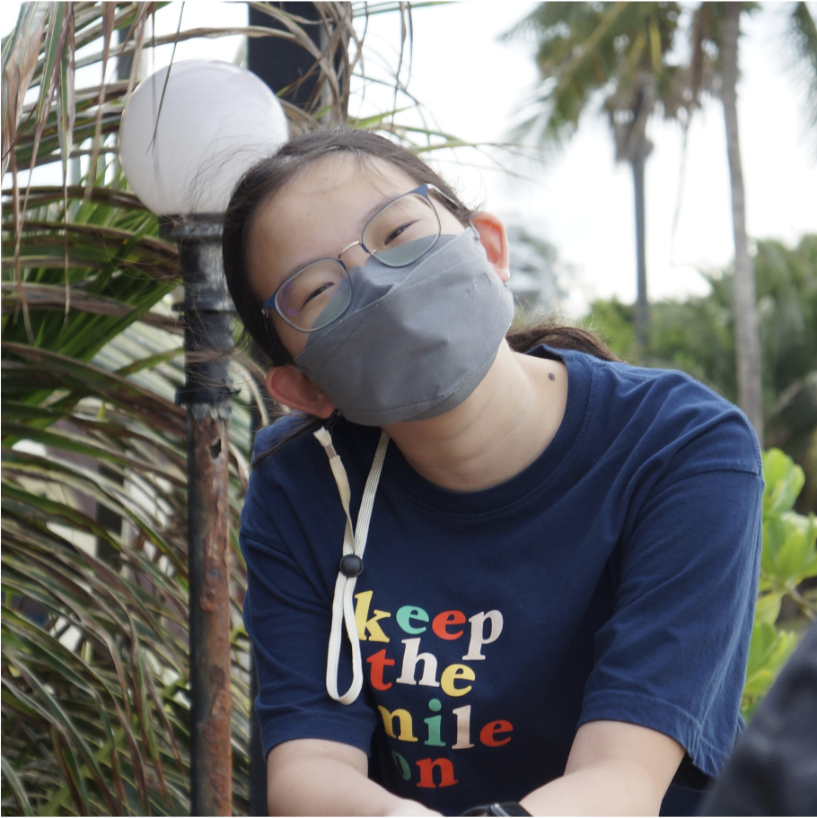

<!DOCTYPE html>

<html>
    <title>Eduality</title>
    <link rel = "stylesheet" href="about.css">
    <link href='https://fonts.googleapis.com/css?family=DM Sans' rel='stylesheet'>
    <link href='https://fonts.googleapis.com/css?family=DM Serif Display' rel='stylesheet'>
</html>

<body>
    <div class="top-header">
        <a class = "menu-item" href="index.html">HOME</a>
        <a class = "menu-item" href="about.html">ABOUT</a>
        <a class = "menu-item" href="data.html">DATA</a>
        <a class = "menu-item" href="involved.html">GET INVOLVED</a>
    </div>
    <div class="top-content">
        <h2 class = "subheading">About us</h2><hr class="hr-line">
    </div>
    <div class="top-content-1">
        
        <p class="caption">Eduality is a website dedicated to promoting education equality through the use of data visualization. We aim to raise awareness about the existing gender disparities in education and the impact it has on individuals and communities. By presenting data in a clear and engaging way, Eduality hopes to inspire and encourage action towards promoting education equality for all.</p>
    </div>
    <div class="middle-content">
        <hr class="hr-line-2"><h2 class = "subheading">Meet the Team</h2>
    </div>
    <div class="middle-content-1">
        <div class="column-1">
            
            <p class="suheading team">Cookie Danchaivijitr</p>
            <p class="caption-1">Cookie is a sophomore in high school and a KWK'23 alum from Thailand. She enjoys coding (front-end and back-end), eating the best food in town, and listening to music. <br> <br>Feel free to reach out to her via Instagram @cook_kan_01</p>
        </div>
        <div class="column-1">
            
            <p class="suheading team">Gianna Chung</p>
            <p class="caption-1">Gianna is an sophomore in high school and a KWK'23 alum from Hong Kong. With a passion for computer science, engineering, baking, and reading, Gianna has a diverse range of interests that inspire her to make a positive impact in the world. Her commitment to empowering girls in STEM has led her to volunteer to teach coding workshops that promote gender equality as well as co-created Eduality. <br> <br> Feel free to reach out to her via Instagram @g1annachung.</p>
        </div>
        <div class="column-1">
            
            <p class="suheading team">Minh-Anh Nguyen-Dang</p>
            <p class="caption-1">Minh-Anh is rising freshman in college and a KWK'23 alum. In her free time, she enjoy reading, watching Modern Family and Brooklyn 99 for the nth time, as well as coffee hopping. <br> <br> She is based in Hanoi and Chicago. Reach out to her via insta @minhanhdnguyen or email dangminhanhnguyen@gmail.com</p>
        </div>
        <div class="column-1">
            
            <p class="suheading team">Mariam Tutayeva</p>
            <p class="caption-1">Mariam is a sophomore at high school and a KWK '23 alum. In her spare time, she enjoys web-developing, crocheting, journaling and watching k-dramas. <br> <br>She currently lives in Kazakhstan. Feel free to reach out to her on Inst @marrtille (● ^ ◡ ^ ●)</p>
        </div>
    </div>
</body>